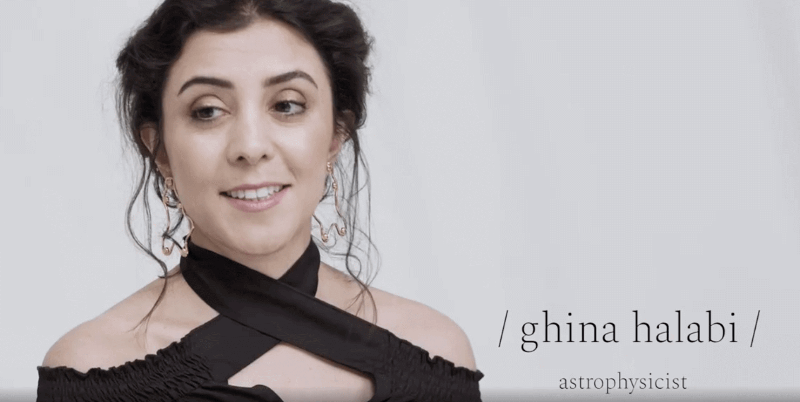

In the Media
LinkedIn Articles
How deep is your bias?
When a space scientist asked her family to name their toy astronauts, she never expected what the naming game would reveal.
The three reasons scientists want story
Scientists are the creators and the guardians of the soundest facts. But whether these facts fail or prevail is another story.
Research Culture: challenging the status-quo & changing expectations
What constitutes a healthy research culture? “Research Culture: Changing Expectations” is a Royal Society conference that explored that. Here's the report.
The bo-o-oring scientist
Poor communication and the failure to engage are common on the science stage. But it doesn't have to be this way.
Space: a tool for sustainability or domain for warfare?
To maintain space as a tool for sustainability and avoid turning it to a potential war-fighting domain, we need novel ways of thinking and communication.
How to nail your speech and hook your audience, every time.
A good speech is not only about information, it’s also about persuasion and influence. How can you use this as an opportunity to further your career, position yourself as a leader and thought influencer, and create impact? Here's how.
Scheherazade Speaks Science
In 1001 nights, Scheherazade the story-teller saves her life and the lives of other women by telling king Shahrayar engaging stories. Today, by telling the public about her science she will spare herself and other women from inequality, bias and under-representation.
Space for Women Ambassador Programme
We are living a space renaissance. To ride this wave we need to challenge the status quo. Space is a tool for sustainable development built on integration, the integration of women and minorities in the exploration of space.
Media Appearances
Cambridge astrophysicist calls on UN to help girls reach for the stars
Dr Ghina Halabi, a postdoctoral researcher in the Institute of Astronomy, has proposed a "UN sponsored international female alumni ambassador programme, for female role models to go back to their countries and their alma maters to inspire young girls to aspire, to dream and to achieve".
Astrophysics student contemplates the stars
Ghina Halabi studies the evolution of stars. It is a rare thing in Lebanon, where the day-to-day crises that plague the country can seem like a more immediate problem than the sweeping panorama of the cosmos.